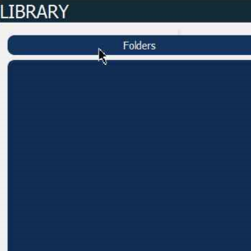
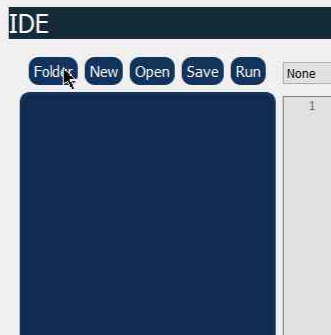
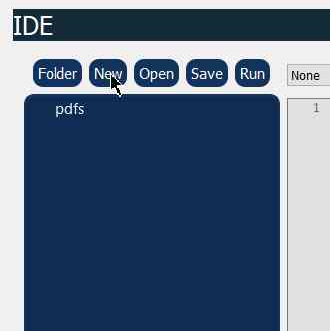
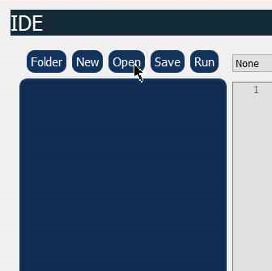
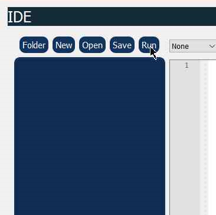
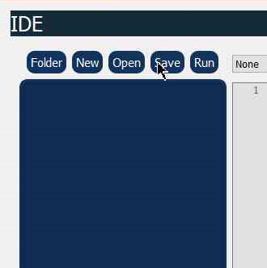
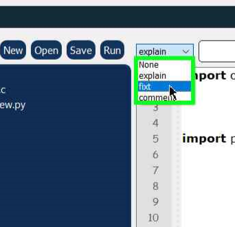
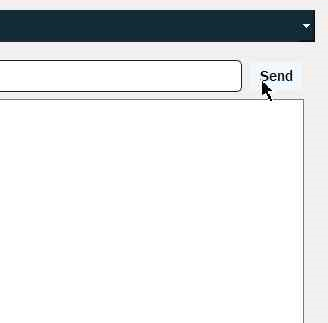

Docs
PDF Viewer

Folder
Opens a certatin directory, from where you can access pdfs.
Code Editor

Folder
Opens a certatin directory.

New
Creates a new file in the project directory

Open
Opens a certatin file along with the project directory.

Run
Runs the current open file if executable like python, c or c++ .

Save
Save the current code in your selected directory.

Choose what you'd like assistance with.
Access detailed documentation or reach out for technical support using the help feature.

Send
Write your query in input box and press send to get AI help.